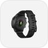
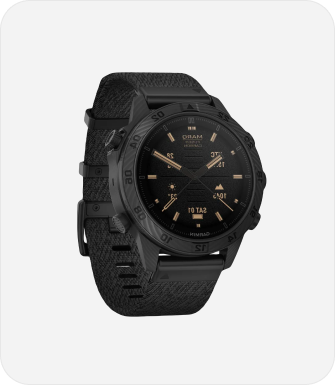

<section class="sale">
<div class="container-sale">

    <h2 class="sale-title">Sale</h2>

    <ul class="sale-list">

        <li class="sale-item">
            
        </li>
        <li class="sale-item">
            
        </li>
        <li class="sale-item">
            
        </li>
        <li class="sale-item">
            
        </li>
        <li class="sale-item">
            
        </li>

    </ul>

    <div class="sale-description">

        <h3 class="sale-description-title">MARQ® Commander (Gen 2) - Carbon Edition</h3>

        <p class="sale-article-text">Product tag: 706587</p>

        <ul class="sale-price">

            <li class="sale-price-list-new">€1500</li>
            <li class="sale-price-list-old">€3000</li>

        </ul>

        <p class="sale-description-text">The Garmin MARQ Commander Gen 2 Carbon Edition is a modern smartwatch for adventurers that takes materials and features
        to the next level. The body of the watch is made of very durable Fused Carbon Fiber material and has a precise AMOLED
        touch screen. The sensitive touch screen is complemented by buttons that can be used in any conditions.</p>

        <ul class="sale-description-list">

            <li class="sale-description-item">Fused carbon fiber</li>
            <li class="sale-description-item">Grade-5 Titanuim</li>
            <li class="sale-description-item">Athlete</li>
            <li class="sale-description-item">Golfer</li>
            <li class="sale-description-item">Commander</li>
            <li class="sale-description-item">Adventurer</li>

        </ul>

    </div>
</div>

</section>